Descripción del sistema
Este sistema tiene como principal funcionalidad permitir una fácil gestión del inventario de equipos tecnológicos (teléfonos, computadoras e impresoras) de la Distribuidora El Loro. Además de permitir generar distintos reportes que pueden ser de utilidad para el equipo de soporte técnico.
Requerimientos del sistema
Programas y herramientas necesarias para la correcta funcionalidad del sistema:
XAMPP

Pasos para la preparación del XAMPP:
Paso 1: Instalación.
Descargar el instalador desde la página oficial de XAMPP y seguir los pasos para la Instalación.
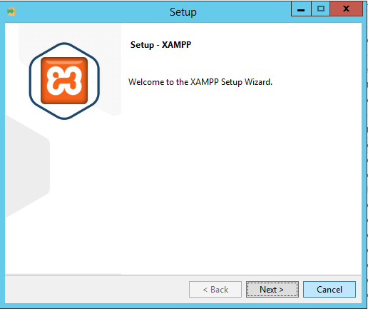Paso 2: Configuración.
2.1: Iniciar el Apache.
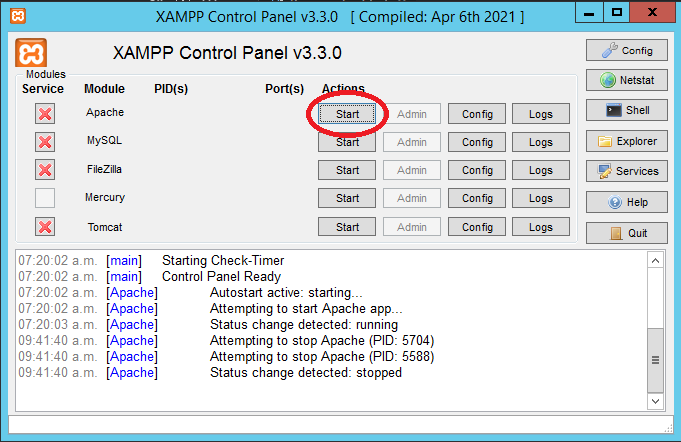2.2: Para evitar errores, hacer lo siguiente:
Entrar a la configuración de Apache y modificar el archivo httpd.conf
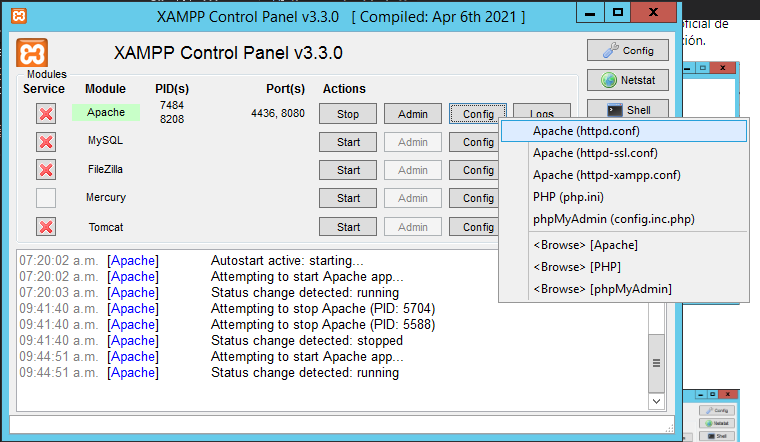Buscar las siguientes líneas y establecer el "Listen" y el "ServerName localhost" por 8080 (valor por defecto: 80)
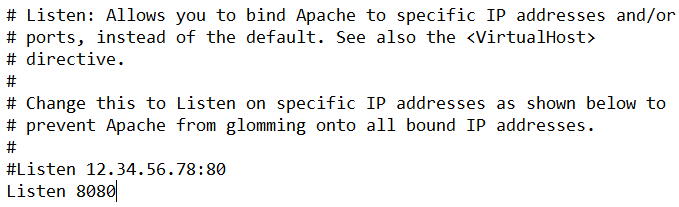 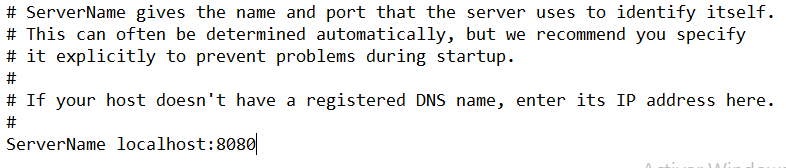Entrar nuevamente a la configuración de Apache y modificar el archivo httpd-ssl.conf
Buscar las siguientes líneas y establecer el "Listen" y el "VirtualHost_default" por 4436 (valor por defecto: 443)
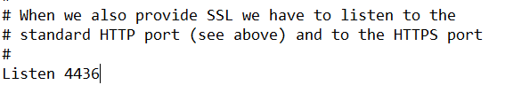 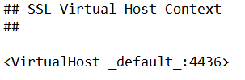Finalmente, entrar a la configuración de XAMPP
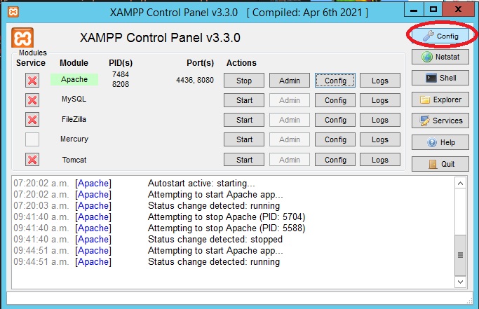Buscar la opción "Service and Ports Settings"
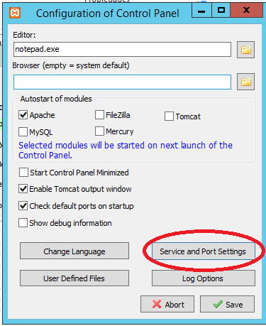Y reemplazar el Main Port y el SSL Port por los establecidos anteriormente
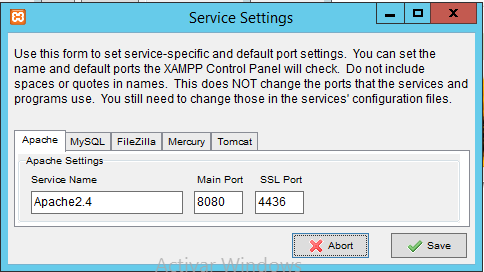De esta forma, ya debería permitir la conexión al sistema para todos los miembros de la red local.
2.3: Como último detalle, activar la extensión "gd" para evitar errores con las imágenes de los reportes.
Entrar a la configuración de Apache y modificar el archivo php.ini
Buscar la línea "extension=gd", por defecto aparece con ";" detrás del texto, lo que quiere decir que la línea está comentada. Basta con eliminar el ";" para que funcione correctamente (reiniciar el apache para aplicar los cambios)
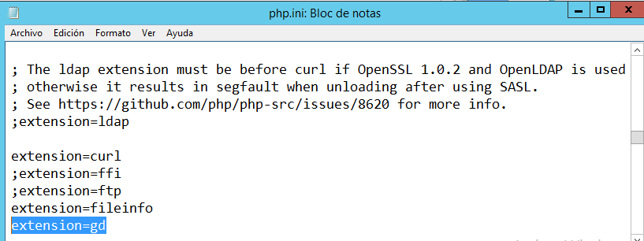Paso 3: Añadir XAMPP al arranque (Opcional).
TutorialCon esto, se da por culminada la configuración del XAMPP.
SQL Server

Pasos para la preparación del SQL Server:
- Paso 1: Instalación
- Paso 2: Conexión del sistema con la base de datos.
- Paso 3: Importar la base de datos.
Paso 1: Instalación.
1.1: Descargar el instalador desde la página oficial de SQL Server y seguir los pasos para la instalación. Tutorial
Paso 2: Conexión del sistema con la base de datos.
2.1: Una vez seguidos los pasos anteriores y después de crear una instancia SQL Server, se debe ingresar a ella desde el SQL Server Management Studio
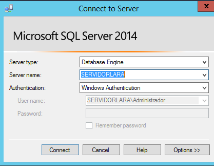2.2: Expandir la instancia creada, luego expandir la carpeta "Seguridad", hacer click izquierdo a la carpeta "Inicios de sesión" y hacer click en "Nuevo inicio de sesión"
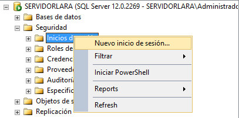2.3: Se abrirá la siguiente ventana, seleccionar la opción de SQL Server authentication, luego ingresar el nombre de usuario y contraseña de preferencia
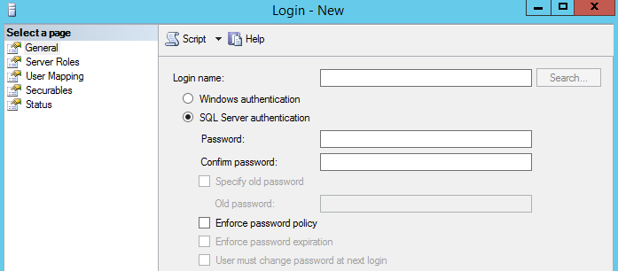2.4: En la misma ventana en la parte izquierda, seleccionar "Server Roles" y marcar las casilas necesarias (preferiblemente todas).
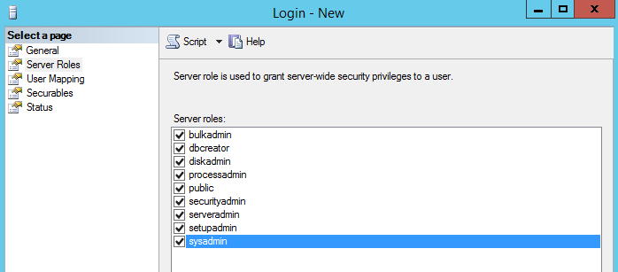2.5: Ya realizados los pasos anteriores, guardar el nuevo inicio de sesión y buscar la siguiente ruta en el explorador de archivos: C:\xampp\htdocs\sistemaLoro\controlador y abrir el archivo"conexion.php"
2.6: Dentro del archivo, reemplazar los valores de "username" y "password" por el nombre de usuario y clave creados anteriormente.
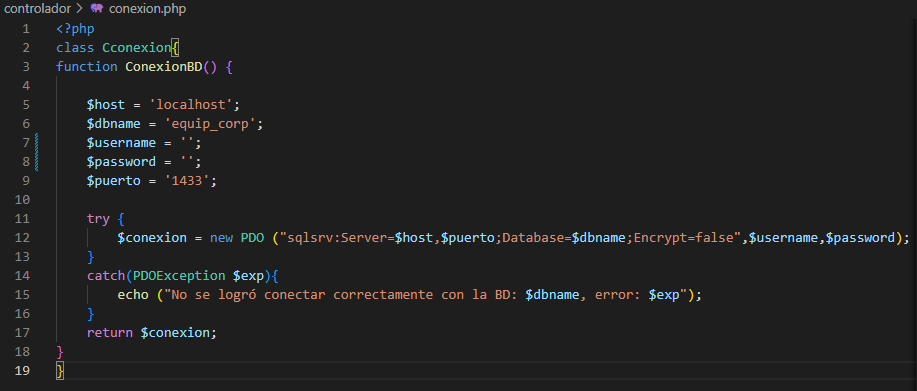Paso 3: Importar la base de datos.
3.1: En el SQL Server Management Studio, abrir una nueva consulta.
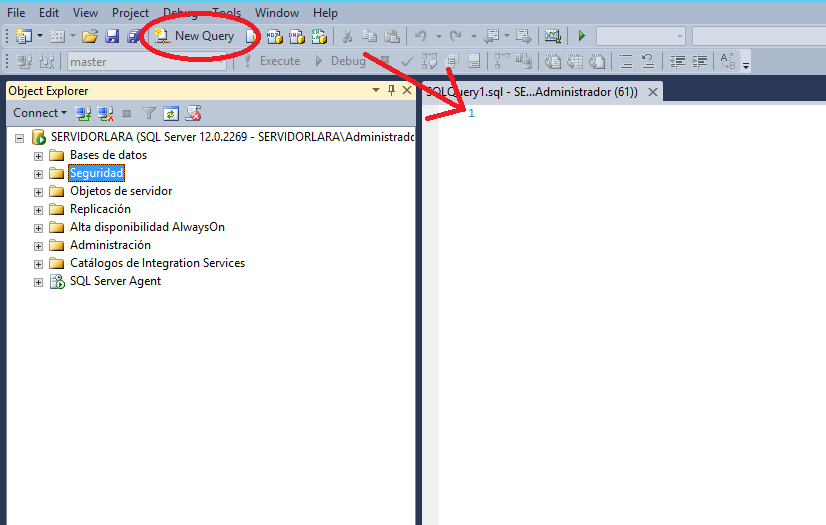3.2: Buscar el archivo "BDSqlServer.txt", ubicado en la carpeta raíz del sistema, copiar su contenido e ingresarlo en la nueva consulta creada.
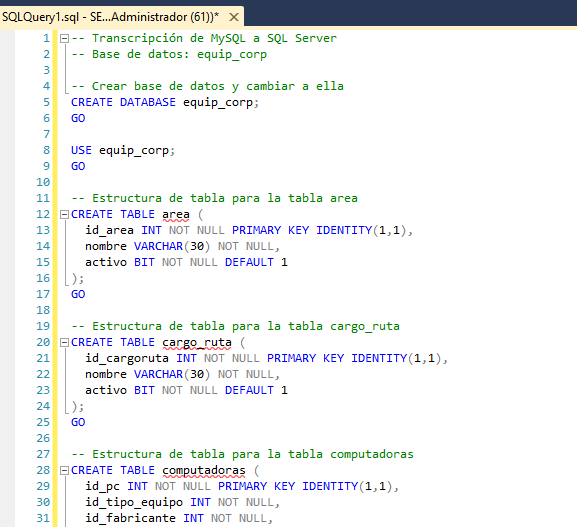Una vez ejecutada la consulta (presionar Execute en la parte de arriba o presionar F5) la base de datos debería cargarse por completo sin ninguna complicación.